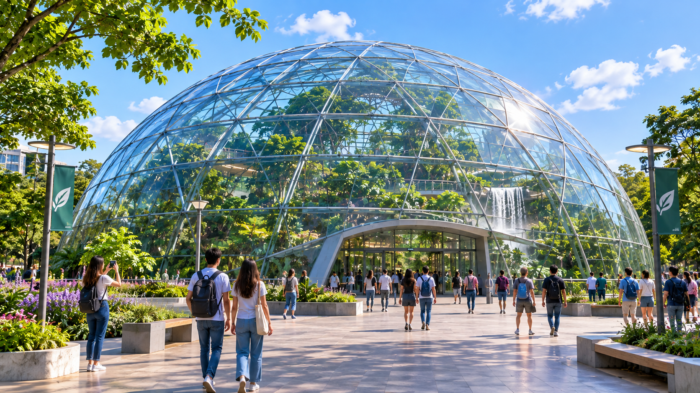

1. El Domo
Ubicación / Zona: Distrito Norte - Zona Ambiental
Descripción
Un complejo masivo de estructuras de cristal autorregenerativo que albergan microclimas controlados por inteligencia artificial, emulando selvas tropicales y bosques nativos en medio de la ciudad.
¿Qué se puede hacer allí?
- Recorrer los senderos botánicos suspendidos a 20 metros de altura.
- Participar en los talleres interactivos de biología sintética y cultivo vertical.
- Probar infusiones preparadas con plantas cultivadas 100% dentro del domo.
¿Por qué se recomienda visitarlo?
Es la demostración máxima de cómo la tecnología puede restaurar la biodiversidad perdida y ofrecer un espacio de relajación pura libre de contaminación sonora.
Propuestas culturales y eventos
Todos los sábados por la noche se realiza el festival "Noches de Bioluminiscencia", con conciertos de música ambiental y proyecciones holográficas sobre la flora.